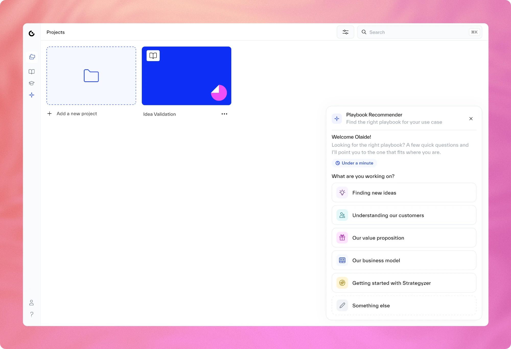

We set out to build an AI assistant. I made the case to ship a three-question Playbook Recommender first, and it moved every number that mattered.

The reframe
Engineering couldn't build the full assistant in the time frame we needed. The team's first instinct, a fair one, was to build a smaller version of it.
I pushed back. A smaller chatbot is just a worse chatbot.
| Question | Smaller chatbot | Guided Recommender |
|---|---|---|
| Designing the conversation | Still needed in full | A few fixed questions |
| Recommending playbooks that don't exist | Still possible | Not possible |
| Describing the problem | People have to type it | People pick from options |
| Shows whether guidance helps | Not clearly | Yes |
So I changed the question
What's the smallest assistant we can build?
What's the one job that matters most right now?
One job came first every time. Finding the right playbook is where every new project starts, and where people kept getting stuck.
Results
Four months of data, comparing the months before and after launch.
was 57%
of new customers start a project and a playbook
was 68%
from customer surveys and our customer success team
was about 10%
return within 30 days of signing up. Most come back weekly.
after the release email
of cancelled customers came back to try it within two weeks
Speaker notes